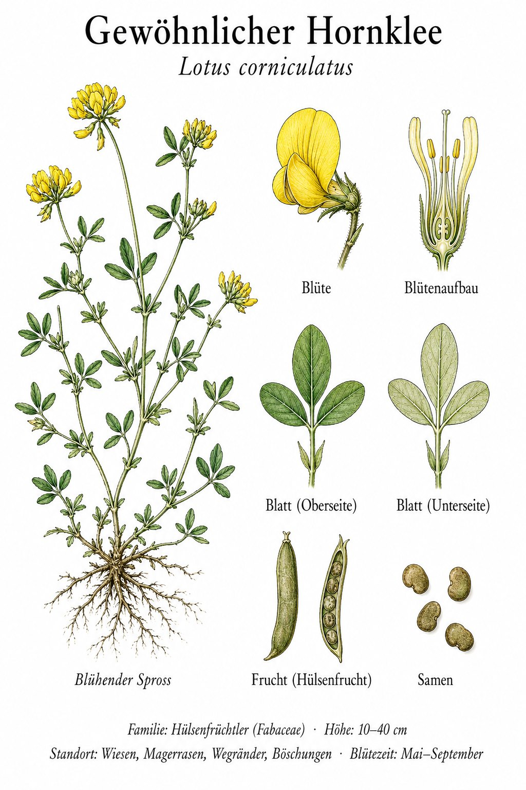

Der Name verwirrt
„Lotus“ klingt nach indischen Wasserlilien — hat aber nichts damit zu tun. Der lateinische Name „Lotus corniculatus“ wurde von Linné für diese kleine Klee-ähnliche Pflanze vergeben, aufgrund seiner antiken Bezeichnung. Die exotische Wasser-Lotus heißt botanisch „Nelumbo nucifera“ — eine ganz andere Familie. Der Hornklee verdient seinen Namen vom Lateinischen „corniculatus“ = mit kleinen Hörnern: Die Schoten sind tatsächlich krumm und stehen wie kleine Hörner ab.
Bienen-Pflanze mit Tarnung
Beim Aufblühen ist die Blüte gelb. Beim Verblühen wird sie tieforange — und das ist ein Bestäuber-Signal: „Hier ist kein Nektar mehr“. Bienen lernen schnell, dass nur die gelben Blüten sich noch lohnen. Eine elegante Spar-Strategie der Pflanze: keine unnützen Besuche, kein Pollenverlust.